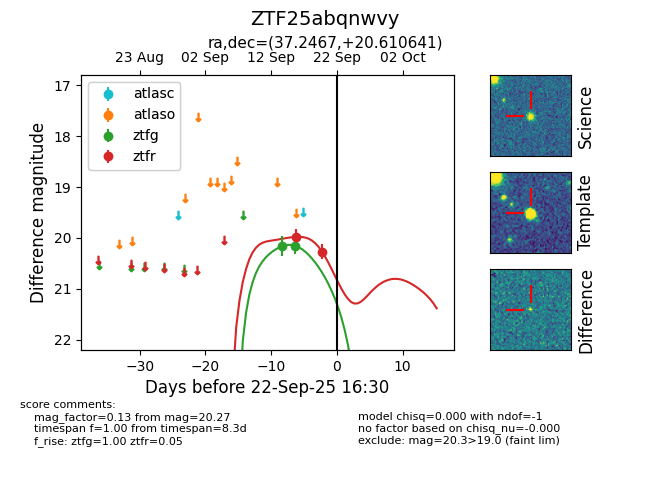

FINK: ZTF25abqnwvy
Lasair: ZTF25abqnwvy
ALeRCE: ZTF25abqnwvy
ZTF25abqnwvy (ztf,fink)
equatorial (ra, dec) = (37.2467,+20.61064)
galactic (l, b) = (151.7658,-36.73999)

last ztfg=20.15, ztfr=20.27
2 ztfg, 2 ztfr detections